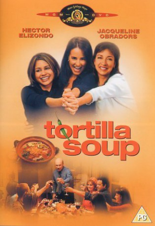

#1801 Tortilla Soup - Die Würze des Lebens
Alternativ: Tortilla Soup
 
 IMDB-Wertung: 6.6 / 10
IMDB-Wertung: 6.6 / 10  Metascore: 58
Metascore: 58 
Retired Mexican-American chef Martin Naranjo shares an L.A. home with his three gorgeous, but single, adult daughters. Though he long ago lost his ability to taste, Martin still lives to cook incredibly lavish dinners for his loved ones and to serve them in a family-style ritual at traditional sit-down meals. Although the women humor their father's old-fashioned ways, each of them is searching for fulfillment outside the family circle. College student Maribel is growing increasingly frustrated with the singles scene and wants a steady man; gorgeous career woman Carmen is fed up with her boyfriend and his wandering eye; meanwhile, eldest daughter Letitia, who has suppressed her own romantic longings, senses something missing in her life. Things take a turn for the romantic when Dad, a widower, meets a vivacious divorcee on the lookout for a mate and each of his daughters, in turn, finds someone. But they'll all discover that the recipe for happiness may call for some unexpected ...
Jahr: 2001
Dauer: 102 Minuten
FSK: 0
Land: USA Studio: Silvio Sardi CommunicationsTonspuren:
Untertitel:
Auflösung: SD (576x304) Größe: 699 MB
Genre: Komödie, Liebe, Drama
Regisseur: Maria Ripoll
Drehbuch: Hui-Ling Wang, Ang Lee, James Schamus, Ramón Menéndez, Tom Musca
Soundtrack: Bill Conti
Darsteller:
- Jacqueline Obradors als Carmen Naranjo
- Tamara Mello als Maribel Naranjo
- Judy Herrera als Eden
- Nikolai Kinski als Andy
 Elizabeth Peña als Leticia Naranjo
Elizabeth Peña als Leticia Naranjo- Constance Marie als Yolanda
- Troy Ruptash als Hairdresser
- Ken Marino als Jeff
- Hector Elizondo als Martin Naranjo
- Julio Oscar Mechoso als Gomez
- Louis Crugnali als Catering Assistant
- Raquel Welch als Hortensia
- Paul Rodriguez als Orlando Castillo
- Eva La Dare als Rachel
- Jamisin Matthews als Gomez's Assistant , uncredited
- Marisabel García als April
- Joel Joan als Antonio Urgell
- Ulysses Cuadra als Snide Student
- Mark de la Cruz als April's Classmate
- Eli Russell Linnetz als April's Classmate
 Stoney Westmoreland als Baseball Umpire
Stoney Westmoreland als Baseball Umpire- Santiago Verdu als , uncredited
Datei: X:\2001\Tortilla Soup - Die Würze des Lebens (2001, FSKo.Al., 576x304).avi seit 24.08.2015
Festplatte: HD 1996-2002
 Es gibt insgesamt 102 Filme in der Gruppe '2001'
Es gibt insgesamt 102 Filme in der Gruppe '2001'